家常菜
-
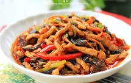
鱼香肉丝步骤图
里脊肉、青红辣椒、红萝卜、干木耳、郫县豆瓣酱、蒜瓣、姜蓉、泡椒、葱白、盐、糖、香醋、酱油、料酒、油、淀粉、清水
综合评分 8.3 （七天内41人做过）
居然
-

懒人版糖醋排骨步骤图
猪小排、料酒、盐、酱油、米醋、白糖、姜片
综合评分 8.6 （七天内209人做过）
小辞xiaoci
-
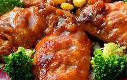
可乐鸡翅步骤图
鸡翅（翅中最佳）、可乐、盐、料酒、老抽、生抽、生姜片（可有可无，有则更好）、桂皮（可有可无，有则更好）
综合评分 8.2 （七天内399人做过）
渍
-
红烧豆腐步骤图
豆腐、猪肉、葱、姜、蒜、豆瓣酱、生抽、老抽、糖、胡椒、鸡粉、生粉
综合评分 7.7 （七天内46人做过）
双不二
-
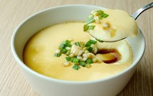
蒸水蛋 步骤图
鸡蛋、盐、酱油、油、温水、葱花
综合评分 8.0 （七天内110人做过）
凉小静的食物恋
-
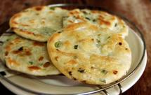
家常葱油饼步骤图
面粉、开水（100C）、冷水、油、葱、盐
综合评分 8.0 （七天内79人做过）
好吃一踏
-
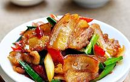
四川回锅肉 步骤图
猪肉、青蒜、青椒、红椒、姜片、郫县红油豆瓣酱、料酒、生抽
综合评分 8.2 （七天内76人做过）
圆猪猪
-
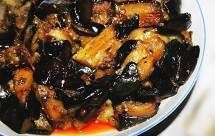
红烧茄子 步骤图
茄子、肉末、豆瓣酱、生抽、盐、味精、鸡精、白糖、花椒粉
综合评分 7.7 （七天内15人做过）
ran
-
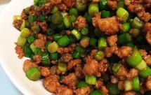
苍蝇头（经典台湾家常菜）步骤图
肉末、蒜苔、蒜末、葱末、小米椒、料酒、白糖、生抽、淀粉、老抽、盐、鸡精
综合评分 8.3 （七天内71人做过）
大乐乐妈妈
-
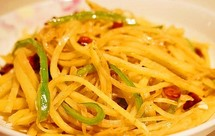
家常菜 酸辣土豆丝步骤图
土豆、青椒丝、干红椒、姜、蒜、油、盐、醋、辣椒油
综合评分 6.9 （七天内25人做过）
美食订阅号
-
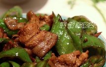
农家小炒肉步骤图
猪肉、尖椒、葱、蒜
综合评分 8.0 （七天内36人做过）
悟饭
-

油焖大虾 步骤图
对虾、姜、蒜、香葱、白糖、番茄酱（或西红柿）、生抽、料酒、盐
综合评分 8.7 （七天内160人做过）
悟饭
-
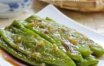
虎皮青椒步骤图
青辣椒、大蒜、香醋、白糖、生抽、油、盐、青辣椒、大蒜、香醋、白糖、生抽、油、盐
综合评分 8.2 （七天内64人做过）
随心煮意
-

大盘鸡 步骤图
鸡、土豆、洋葱、青椒、干红辣椒、花椒、八角、豆瓣酱、姜、蒜、酱油（老抽也行啊)、盐、料酒、啤酒、味精
综合评分 8.5 （七天内111人做过）
希洛大大大大人
-
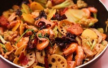
麻辣香锅 步骤图
莲藕、莴笋、土豆、菜花（小）、木耳、芹菜、大葱、蒜、姜、蒜苗、香菜、虾、瘦肉、午餐肉、生抽、糖、料酒、郫县豆瓣酱、干辣椒、花椒、十三香
综合评分 8.2 （七天内70人做过）
0夏天0
-
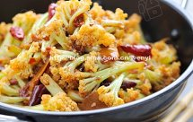
很“浪费”米饭的家常菜之一-------干锅菜花步骤图
白菜花、干辣椒、花椒、姜、葱、蒜、香叶、郫县豆瓣酱、盐、生抽、糖、香油
综合评分 7.6 （七天内40人做过）
" E s c "
-
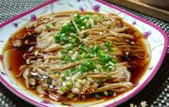
蒜蓉蒸金针菇步骤图
金针菇、蒜、香葱、海天海鲜酱油、海天蚝油、色拉油、盐、糖
综合评分 8.1 （七天内25人做过）
惊鸿一瞥
-
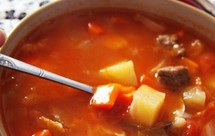
罗宋汤步骤图
牛肉、洋葱、土豆、番茄、圆白菜、胡萝卜、番茄沙司、面粉、黄油、植物油、黑胡椒、盐
综合评分 8.0 （七天内19人做过）
锦食堂
-
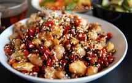
辣子鸡步骤图
鸡腿肉、盐、酱油、糖、干辣椒、花椒、八角、葱、食用油、熟芝麻
综合评分 8.0 （七天内25人做过）
寻没
-
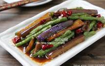
茄子豆角 步骤图
茄子、豆角、干辣椒、大蒜、蚝油、生抽、油
综合评分 7.6 （七天内43人做过）
随心煮意